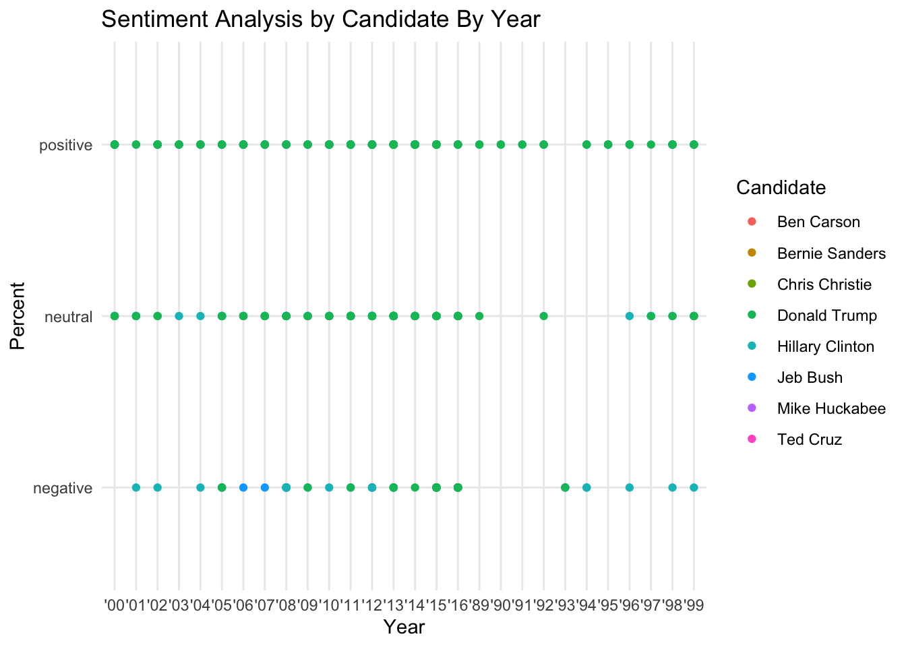

For this exercise I chose a graph from the “Hip-Hop Is Turning On Donald Trump” article by Allison McCann from FiveThirtyEight (https://projects.fivethirtyeight.com/clinton-trump-hip-hop-lyrics/). The graph displays whether the references about presidential candidates in music were classified as positive, negative, or neutral. For example, “I’m rich just like Donald Trump” received a classification of “positive.” “Negative” classifications went to those that were explicitly derogatory or misogynistic/sexist such as “Never put your trust in Hillary Rodham”. References that didn’t express an opinion were classified as “neutral”.
This is the original graph from the article:
# loading the libraries I might needlibrary(tidyverse)
── Attaching core tidyverse packages ──────────────────────── tidyverse 2.0.0 ──
✔ dplyr 1.1.4 ✔ readr 2.1.4
✔ forcats 1.0.0 ✔ stringr 1.5.1
✔ ggplot2 3.4.4 ✔ tibble 3.2.1
✔ lubridate 1.9.3 ✔ tidyr 1.3.0
✔ purrr 1.0.2
── Conflicts ────────────────────────────────────────── tidyverse_conflicts() ──
✖ dplyr::filter() masks stats::filter()
✖ dplyr::lag() masks stats::lag()
ℹ Use the conflicted package (<http://conflicted.r-lib.org/>) to force all conflicts to become errors
library(scales)
Attaching package: 'scales'
The following object is masked from 'package:purrr':
discard
The following object is masked from 'package:readr':
col_factor
library(here)
here() starts at /Users/valeriasantiago/Documents/arlynsantiago-MADA-portfolio
library(readr)library(ggplot2)library(dplyr)# loading the data lyric_data <-read_csv(here("presentation-exercise","genius_hip_hop_lyrics.csv"))
Rows: 377 Columns: 9
── Column specification ────────────────────────────────────────────────────────
Delimiter: ","
chr (7): candidate, song, artist, sentiment, theme, line, url
dbl (2): id, album_release_date
ℹ Use `spec()` to retrieve the full column specification for this data.
ℹ Specify the column types or set `show_col_types = FALSE` to quiet this message.
# to visualize structure of datasetstr(lyric_data)
spc_tbl_ [377 × 9] (S3: spec_tbl_df/tbl_df/tbl/data.frame)
$ id : num [1:377] 1 2 3 4 5 6 7 8 9 10 ...
$ candidate : chr [1:377] "Mike Huckabee" "Mike Huckabee" "Jeb Bush" "Jeb Bush" ...
$ song : chr [1:377] "None Shall Pass" "Wellstone" "Awe" "The Truth" ...
$ artist : chr [1:377] "Aesop Rock" "Soul Khan" "Dez & Nobs" "Diabolic" ...
$ sentiment : chr [1:377] "neutral" "negative" "neutral" "negative" ...
$ theme : chr [1:377] "N/A" "N/A" "N/A" "political" ...
$ album_release_date: num [1:377] 2011 2012 2006 2006 2007 ...
$ line : chr [1:377] "Wither by the watering hole, Border patrol / What are we to Heart Huckabee" "Might find the door but never touch the key / They get tricked by slick Mike Huckabee" "I heard Jeb Bush looking for a (inaudible)" "What you heard before ain't as big of a lesson / As George and Jeb Bush rigging elections" ...
$ url : chr [1:377] "http://genius.com/Aesop-rock-none-shall-pass-lyrics" "http://genius.com/Soul-khan-wellstone-lyrics" "http://genius.com/Dez-and-nobs-awe-lyrics" "http://genius.com/Diabolic-the-truth-lyrics" ...
- attr(*, "spec")=
.. cols(
.. id = col_double(),
.. candidate = col_character(),
.. song = col_character(),
.. artist = col_character(),
.. sentiment = col_character(),
.. theme = col_character(),
.. album_release_date = col_double(),
.. line = col_character(),
.. url = col_character()
.. )
- attr(*, "problems")=<externalptr>
# Convert album_release_date to a date format and extract the yearlyric_data$year <-format(as.Date(as.character(lyric_data$album_release_date), format ="%Y"), "%Y")# Calculate the count and then percentage of each sentiment per yearpercent_summary <- lyric_data %>%group_by(year, sentiment) %>%summarise(count =n(), .groups ='drop') %>%mutate(total =sum(count), percentage = (count / total) *100)# Create the scatter plot ggplot(percent_summary, aes(x = year, y = percentage, color = sentiment)) +geom_point() +scale_x_discrete(guide =guide_axis(angle =90)) +labs(title ="Percentage of Sentiment by Year", x ="Year",y ="Percentage", color ="Sentiment") +theme_minimal()
# I had an issue where the x-axis labels were too congested so I rotated them 90 degress by following the code written on https://stackoverflow.com/questions/1330989/rotating-and-spacing-axis-labels-in-ggplot2
# Convert album_release_date to a two-digit year formatlyric_data$year <-format(as.Date(as.character(lyric_data$album_release_date), format ="%Y"), "%y")lyric_data$year <-paste0("'", lyric_data$year) # not really sure what this means used chatGPT on this part# Create a scatterplot second attemptggplot(lyric_data, aes(x = year, y = sentiment, color = candidate)) +geom_point() +labs(x ="Year", y ="Percent", title ="Sentiment Analysis by Candidate By Year") +theme_minimal() +scale_color_discrete(name ="Candidate")

#also need to fix x-axis
#I will now try to create a table of the percentage of each sentiment within the lyric_data dataset# Percent needs to be calculated as the percentage of each sentiment per year and candidatepercent_count <- lyric_data %>%group_by(year, candidate, sentiment) %>%summarise(count =n(), .groups ='drop') %>%mutate(total =sum(count), percent = (count / total) *100)percent_count <-factor(lyric_data$sentiment)# I will use table1 to create a tablelibrary(table1)
Attaching package: 'table1'
The following objects are masked from 'package:base':
units, units<-
percent_count_table <-table1(~ percent_count | sentiment, data=lyric_data)percent_count_table # just focus on overall
negative (N=71)
neutral (N=128)
positive (N=178)
Overall (N=377)
percent_count
negative
71 (100%)
0 (0%)
0 (0%)
71 (18.8%)
neutral
0 (0%)
128 (100%)
0 (0%)
128 (34.0%)
positive
0 (0%)
0 (0%)
178 (100%)
178 (47.2%)
Now to create individual scatterplots with the different classifications…
# Convert album_release_date to a two-digit year formatlyric_data$year <-format(as.Date(as.character(lyric_data$album_release_date), format ="%Y"), "%y")lyric_data$year <-paste0("'", lyric_data$year)percent_count2 <- lyric_data %>%group_by(year, candidate, sentiment) %>%summarise(count =n(), .groups ='drop') %>%mutate(total =sum(count), percent = (count / total) *100)# Define custom colors for candidatescandidate_colors <-c("Donald Trump"="orange", "Hillary Clinton"="lightblue", "Jeb Bush"="red", "Chris Christie"="yellow", "Mike Huckabee"="pink", "Bernie Sanders"="green", "Ben Carson"="lightgreen", "Ted Cruz"="lightyellow") #had to choose light yellow because light red was not an option and light pink was too close to pink# Create separate scatterplots for each sentiment and rotate x-axis labels by 90 degreesggplot(percent_count2, aes(x = year, y = percent, color = candidate)) +geom_point() +facet_wrap(~sentiment, scales ="free_y") +# used for free scales...labs(title ="Sentiment Analysis by Candidate By Year", x ="Year", y ="Percent") +# tried using scale_x_continuous(limit = c(as.Date(1990), as.Date(1995), as.Date(2000), as.Date(2005), as.Date(2010), as.Date(2015))) + to select for specific year but did not worktheme_minimal() +theme(axis.text.x =element_text(size =3, angle =90)) +scale_color_discrete(name ="Candidate")
I think minus the x-axis label size and colors I came pretty close!